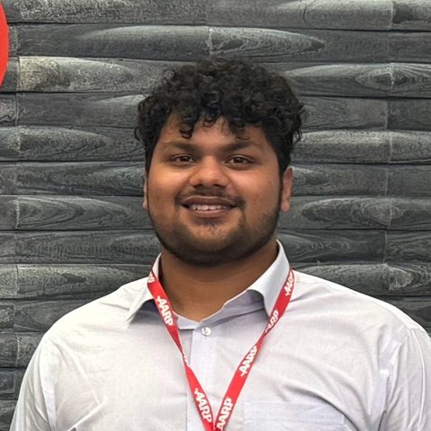

Samarth Singh
Data Scientist & Engineer
I build scalable data pipelines and intelligent systems that turn complex datasets into actionable insights — from Spark and Kafka infrastructure to ML models and RAG applications.
About
I'm a data scientist and data engineer with close to four years of hands-on experience building scalable data solutions on Microsoft Azure, Databricks, and Google Cloud for Fortune 500 retail and supply chain clients.
I work across the stack — data analysis, visualization, and warehousing with SQL, Python, and Power BI — and I'm currently pursuing an M.S. in Data Science at the University of Maryland.
When a problem looks unsolvable, the answer is usually more coffee and harder thinking.
Experience
-
Jun 2025 — Present
Data Engineer Intern
AARP, Data & Analytics Group · Washington, DC
- Engineered a Random Forest model in Spark MLlib to maintain more than 50% cluster CPU utilization.
- Automated Databricks administration via Flask and REST APIs, improving productivity by 10%.
- Developed a real-time model drift monitoring dashboard for 20+ production models.
- Deployed an agentic AI ticket management system using Kafka and Docker.
-
Aug 2023 — Jun 2024
Senior Data Scientist, Procurement Analytics
Mu Sigma, for Walmart USA · Bengaluru
- Designed and deployed BigQuery ETL pipelines for procurement reporting and governance.
- Converted legacy SQL procedures to PySpark, improving refresh speed by 30%.
- Reduced manual reporting effort by 40% using Airflow-scheduled pipelines.
- Led cross-functional stakeholder reviews and agile backlog planning.
-
Jan 2023 — Aug 2023
Data Scientist, Supply Chain Analytics
Mu Sigma, for Mars USA · Bengaluru
- Implemented Gurobi-based linear optimization, reducing warehouse stock imbalance by 20%.
- Improved solver stability with dimensionality reduction, increasing accuracy by 4%.
- Delivered Power BI KPI dashboards, increasing stakeholder adoption by 15%.
-
Aug 2021 — Jan 2023
Data Scientist, Retail Analytics
Mu Sigma, for Mars USA · Bengaluru
- Integrated a YOLOv4 model in Azure Data Factory, reducing store audit time by 50%.
- Generated parallelized KPI scorecards across 100+ SKUs using Pandas and Dask.
- Configured Azure Log Analytics for 500+ daily audits to improve observability.
Projects
-
Deep-Agent AI for Food Bank Operations
Capital One competition. Real-time analytics pipeline that processes and visualizes agricultural and food bank ticket data to power agentic AI decisions.
Kafka · ClickHouse · FastAPI · Docker
-
Conrad — RAG Legal Assistant
RAG assistant for contract review with clause-level retrieval and natural-language Q&A over long legal documents.
Python · LangChain · FAISS · Groq · Chainlit
-
Real-Time F1 Commentary
Bitcamp hackathon. Automated race commentary engine that turns live OpenF1 telemetry into human-like commentary with Gemini.
Python · Gemini API · Streamlit
-
Consumer Complaint Resolution Prediction
End-to-end pipeline on CFPB complaints with class-imbalance handling, comparing Logistic Regression and Random Forest on F1 and ROC-AUC.
Python · Pandas · Scikit-learn · Plotly
-
Loan Application Classification
Compared LDA, Decision Tree, kNN, and SVM classifiers for loan approval; SVM with PCA was the most accurate and efficient.
Python · Scikit-learn · PCA
Skills
- Machine learning
- PyTorch, TensorFlow, Keras, Scikit-learn, Hugging Face, MLflow
- LLMs & RAG
- LangChain, LangSmith, FAISS, vector stores, OpenAI, prompt engineering
- Data engineering
- Spark, Databricks, Kafka, Airflow, Flink, Hadoop
- Cloud
- Azure, Google Cloud, AWS, Snowflake, Docker, Kubernetes
- Languages
- Python, SQL, R, Scala, Java, JavaScript
- Databases
- PostgreSQL, MongoDB, Redis, Cassandra, Neo4j, Elasticsearch
- Visualization
- Power BI, Tableau, Looker, Plotly, D3.js, Matplotlib
Education
-
Aug 2024 — May 2026
M.S. in Data Science
University of Maryland, College Park
- Machine learning, data engineering and big data analytics (Spark, Kafka, Databricks), and cloud infrastructure on Azure and AWS.
- Applied projects in time-series forecasting and natural language processing.
-
Jul 2017 — Jun 2021
B.Tech in Computer Science & Engineering
Vellore Institute of Technology
- Graduated with distinction; data visualization projects in Python.
- Youth Red Cross, university technology clubs, and hackathons.
Contact
I'm open to data science and data engineering roles. The best way to reach me is by email at samarth1@umd.edu, or connect on LinkedIn.